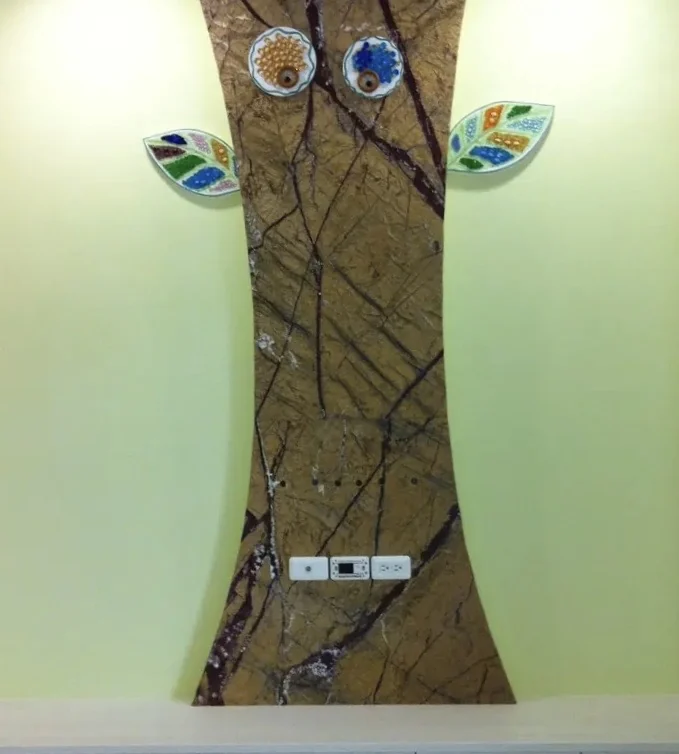
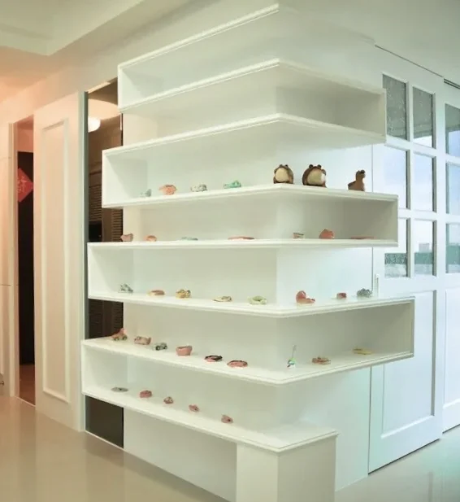
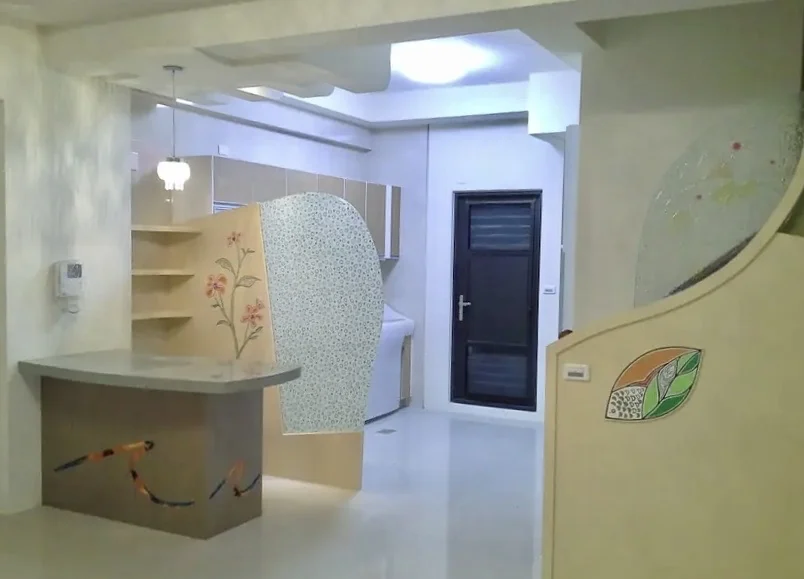
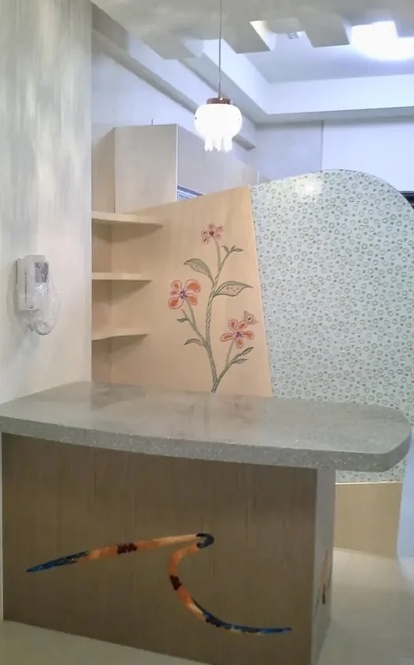
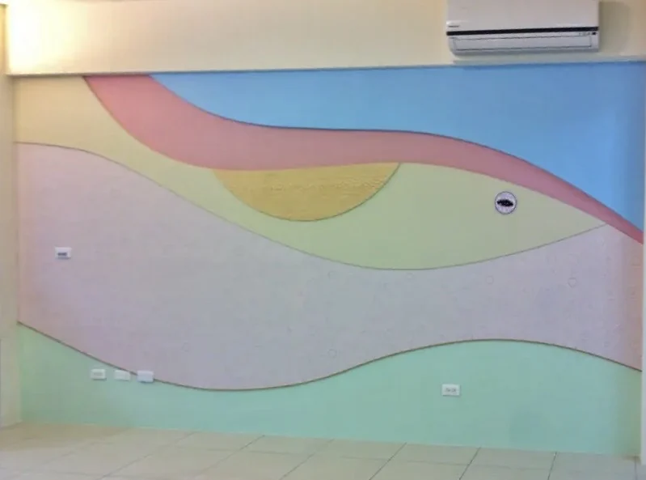
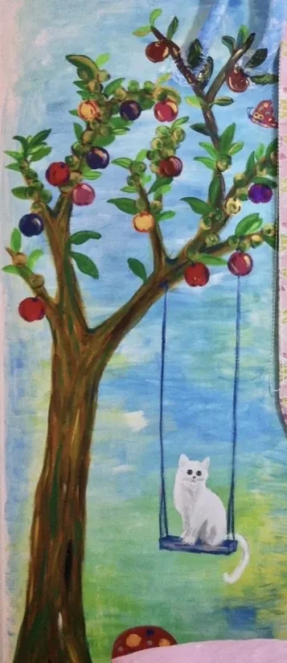
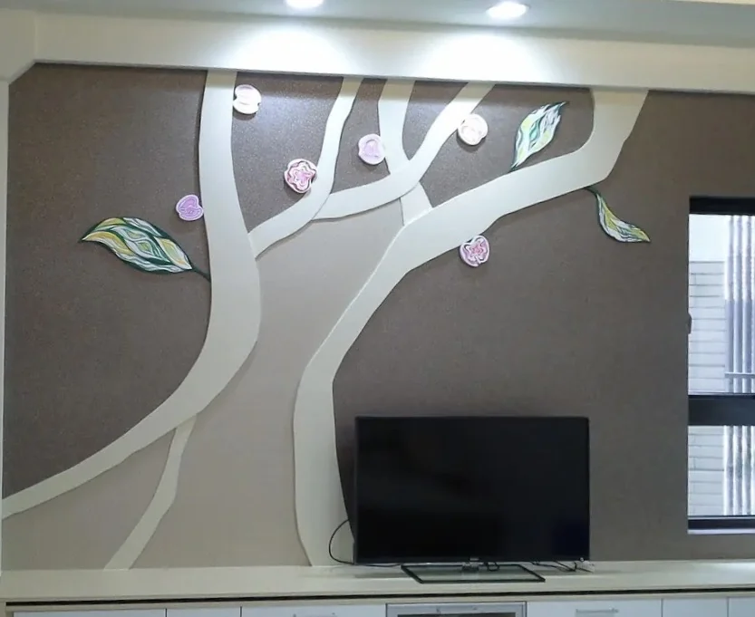
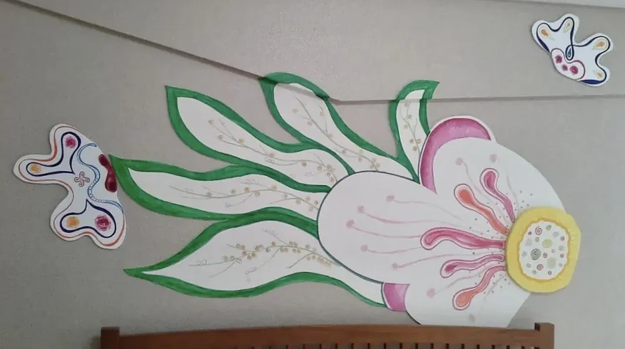

04.4 / 早期創作 Early Works
空間之始 Space Origin
在成為藝術家之前，生命已經悄悄長進空間裡。 Life had already grown into space.
空間之始之一 Spatial Origin I
空間中的觀看 Gaze Within Space
早期的線條先進入商業空間、門面與展場角落，讓建築不只是背景，而開始擁有表情、凝視與隱藏的角色。 Early lines first entered commercial interiors, storefronts, and exhibition corners, allowing architecture to become more than background and begin to hold expression, gaze, and hidden figures.
空間中的憂鬱王子 Melancholy Prince in Space


門上的行走者 Walker on the Door

空間中的觀看 Gaze Within Space

空間之始之二 Spatial Origin II
家的樹形生命 Tree-Shaped Life at Home
樹的形象進入客廳、櫃體與日常動線，使居家空間從功能性的牆面，轉化為正在傾聽、發光與生長的生命場域。 Tree imagery enters living rooms, cabinets, and daily circulation, transforming functional walls into fields of life that listen, glow, and grow.
漱石之樹 Tree of Soseki Stone

白色聖誕樹 White Christmas Tree

空間之始之三 Spatial Origin III
牆面與童話花園 Walls and a Fairy-Tale Garden
花、色帶、果樹、白貓與蝴蝶在牆面上展開，讓日常居所成為一座柔和、天真且可被行走的童話花園。 Flowers, colored ribbons, fruit trees, a white cat, and butterflies unfold across the wall, turning daily dwelling into a gentle, innocent fairy-tale garden one can walk through.
花在家的轉角 Flowers at the Corner of Home


流動的牆 Flowing Wall

樹下的白貓 White Cat Beneath the Tree

蘋果樹之家 Home of the Apple Tree

蝶戀花 Butterfly Loves Flower

空間之始把創作推向居家牆面、櫃體與動線，讓生命不只停留在紙面或物件，而是開始住進日常之中。 Spatial Origin extends creation into home walls, cabinets, and movement paths, allowing life to live not only on paper or objects, but within the everyday.
回望這些早期空間作品，可以看見又禎宇宙後來的核心已悄悄成形：觀看、生命、童話與內在空間彼此交會。 Looking back at these early spatial works, one can see the later core of the Yuzen Universe quietly taking form: gaze, life, fairy tale, and inner space meeting one another.